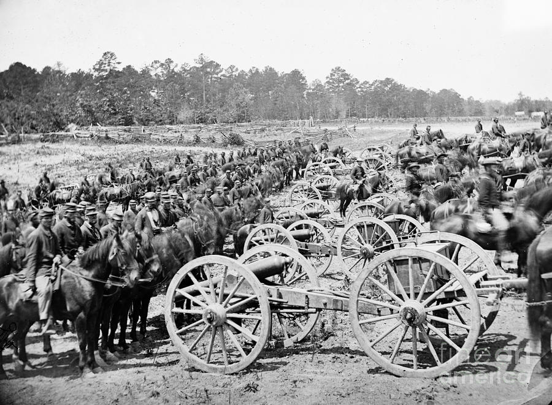
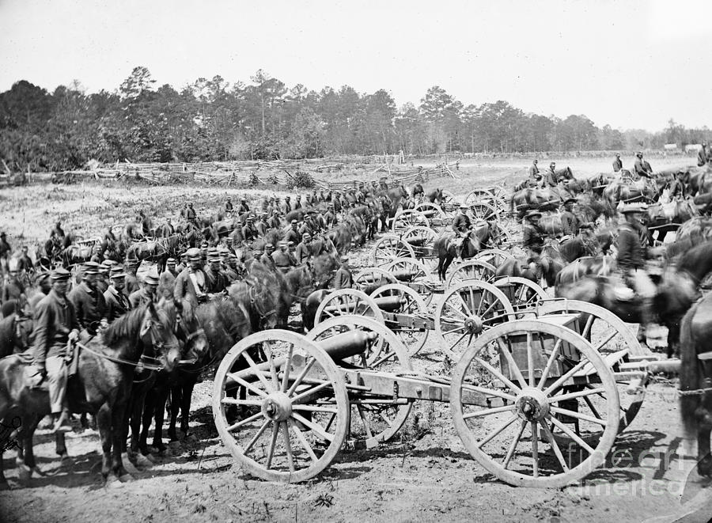
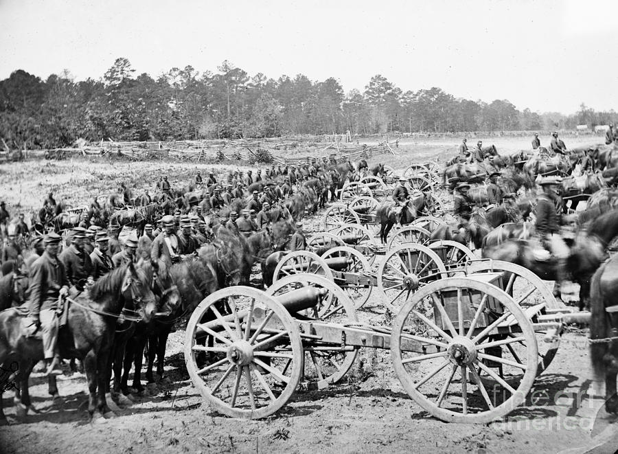
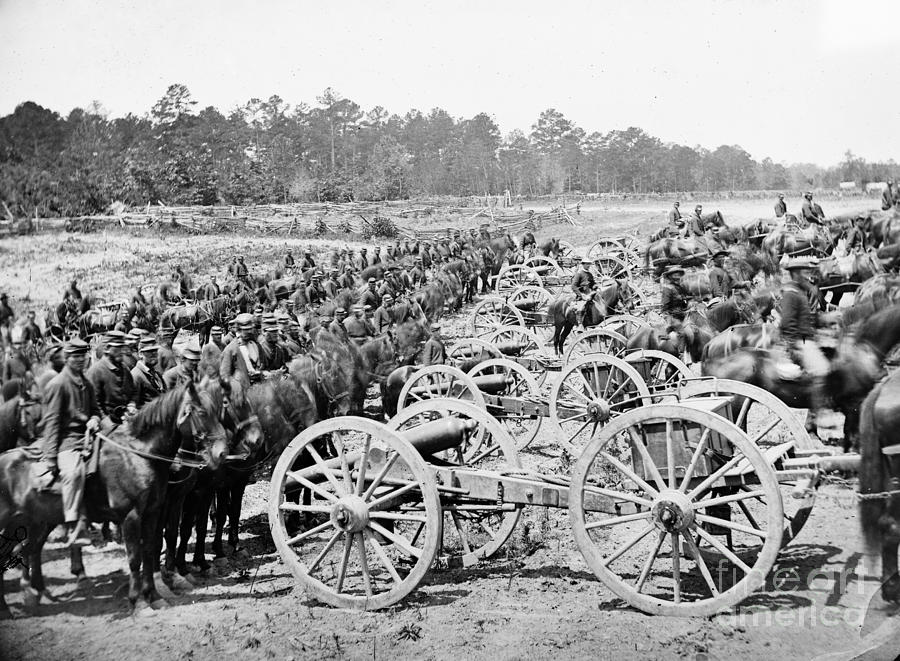

 

The American Civil War was fought in the United States from 1861 to 1865. The result of a long-standing controversy over slavery, war broke out in April 1861, when Confederates attacked Fort Sumter in South Carolina, shortly after President Abraham Lincoln was inaugurated. The nationalists of the Union proclaimed loyalty to the U.S. Constitution. They faced secessionists of the Confederate States of America, who advocated for states' rights to expand slavery.
Among the 34 U.S. states in February 1861, seven Southern slave states individually declared their secession from the U.S. to form the Confederate States of America, or the South. The Confederacy grew to include eleven slave states. The Confederacy was never diplomatically recognized by the United States government, nor was it recognized by any foreign country (although Britain and France granted it belligerent status). The states that remained loyal, including the border states where slavery was legal, were known as the Union or the North.
The North and South quickly raised volunteer and conscription armies that fought mostly in the South over four years. The Union finally won the war when General Robert E. Lee surrendered to General Ulysses S. Grant at the Battle of Appomattox Court House followed by a series of surrenders by Confederate generals throughout the southern states. Four years of intense combat left 620,000 to 750,000 soldiers dead, a higher number than the number of American military deaths in all other wars combined. Much of the South's infrastructure was destroyed, especially the transportation systems, railroads, mills and houses. The Confederacy collapsed, slavery was abolished, and 4 million slaves were freed. The Reconstruction Era (1863–1877) overlapped and followed the war, with the process of restoring national unity, strengthening the national government, and granting civil rights to freed slaves throughout the country. The Civil War is the most studied and written about episode in American history.